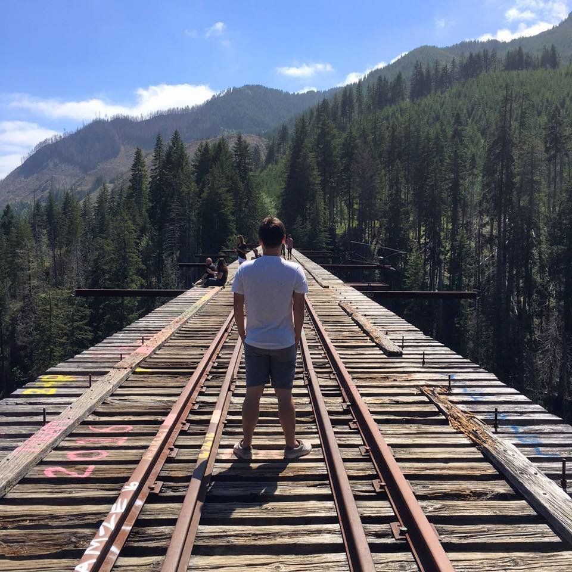

Designer // Runner // Raver
Hi I'm Dominic! I am 20 years old and a junior at Eastern Washington University studing Visual Communication and Design. I know this is only the beginning of my web design journey, but I hope that I can do front end for websites when I leave college. Not to mention being the Sr. Designer for a firm/company on the west coast. I still have a long journey ahead of me, but I can't wait to see my skills grow as a designer. Outisde my career goals I would love to travel the world and go see everything the world has to offer. Along the way making stops at all of the music festivals around the world.
I do not read often, but when I do you know it better be something amazing and worth my time. This is why I chose Underwater Puppies, a book that makes people smile all over the world. It is a book dedicated to pictures of dogs that are underwater. At first you may think this book is a joke, but is one of the greatest books ever made.
Teriyaki Chicken is and will always be my favorite food. If there was one food I had to choose to eat for the rest of my life it would be teriyaki chicken. With this being said if you ever want to find me during dinner time I will be at Rokko's here in Cheney eating their teriyaki chicken rice bowl.
If I am not eating chicken teriyaki you better beleive that I will be eating some delicious chicken taquitos. I love chicken if you can't tell already and that is why chicken taquitos is one of my favorite meals. Also getting that free chips and salsa at a mexican restaurant is literally priceless.
Italain sandwiches are the only sandwiches I will ever eat. I do not fully understand why I love them so much but I do. Does not matter where I go, but if they have an italian sandwich option I know that it will be something I will love.